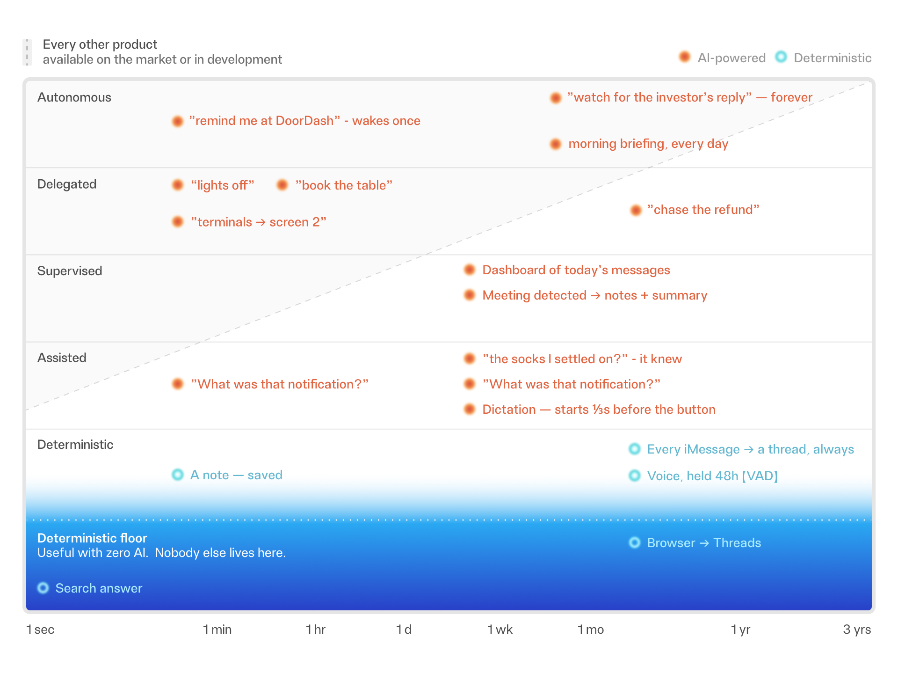
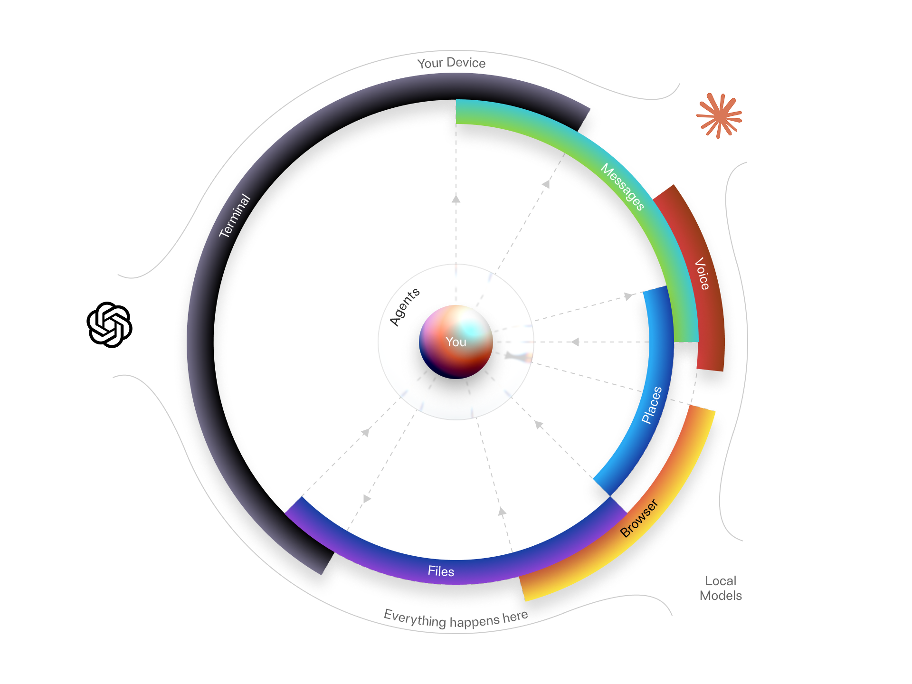
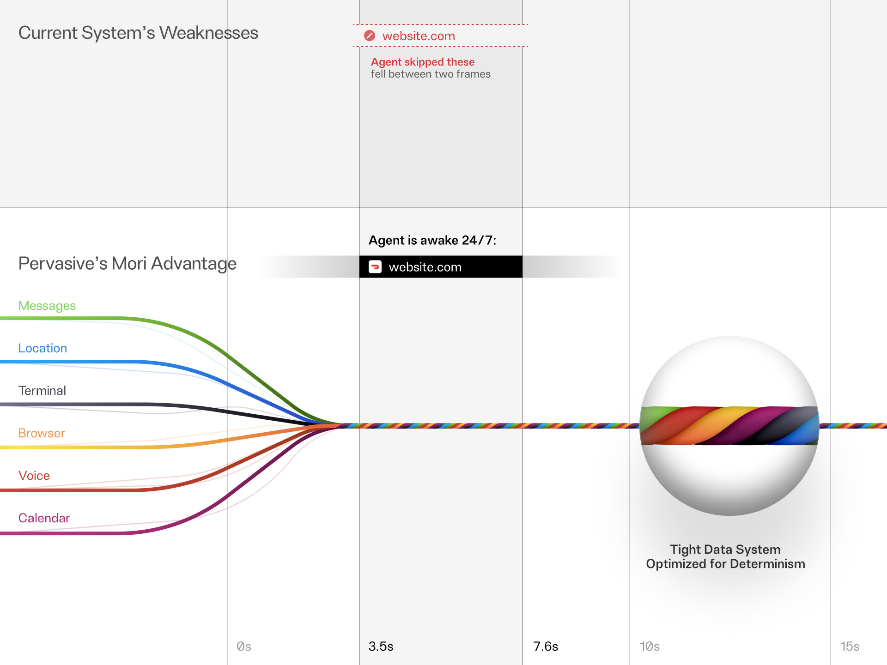

001.
Two axes: how long it works for you (sub-second → years) and how much it does alone (zero AI → fully autonomous). Every dot is a real Pervasive moment — including the ones on the deterministic floor, where no other product has a single dot. We draw only ourselves; the market gets one sentence.

002.
Every lab's architecture diagram: their cloud in the middle, you as an arrow at the edge. Ours is the same diagram language with the gravity reversed — you in the middle, your world on your device, and the labs as swappable peripherals.

003.
Everything that happens to you — messages, places, commands, pages, voice, events — braids into one typed cord. Agents tap the cord at exact points. UI renders off slices of it. Scrape-and-poll products miss what falls between frames; the log wakes the agent exactly once, exactly then.
